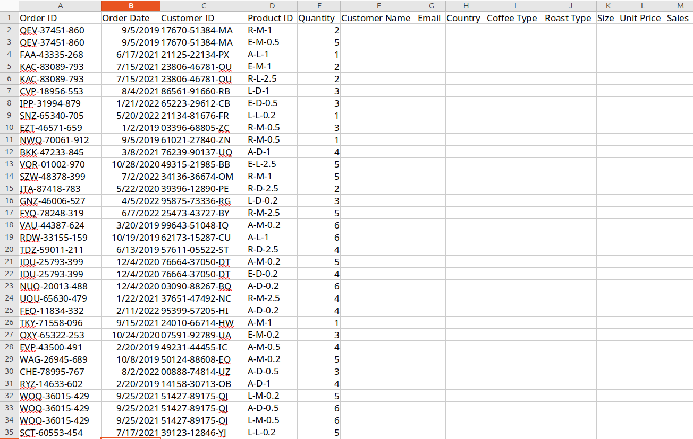

Stakeholder-ready dashboard with slicersStandardized, Transformed orders sheet after lookups

Raw Data From Start of ProjectAdjusting time series to Jan 2019-Jan 2021 and slicing by weight
Key Features
Multi-sheet data wrangling:
consolidated raw orders, customers & products sheets into one fact table using XLOOKUP, INDEX/MATCH and nested IF logic.
Smart lookups & standardization:
pulled each order’s country and loyalty tier from the Customers sheet, and fetched unit prices by matching both product code and package size in the Products sheet (e.g. =XLOOKUP($C2,$C$2:$C$1001,customers!$G$2:$G$1001) | =INDEX(products!$C$2:$G$49, MATCH($D2,products!$A$2:$A$49,0), MATCH($L$1,products!$A$1:$G$1,0)) | =IF(I2="Rob","Robusta",IF(I2="Ara","Arabica",…))
Interactive slicing & drill-down:
intuitive date, roast-type, size & loyalty-card slicers drive all visuals.
e.g. slice Jan ’19→Jan ’20 & 2.5 kg → see total sales by country, top-5 customers and time-series update for that segment (2.5 kg was highest overall).
Dynamic pivot charts:
time-series line, country bar & top-5 customer bar—all fully sliceable by your filters.